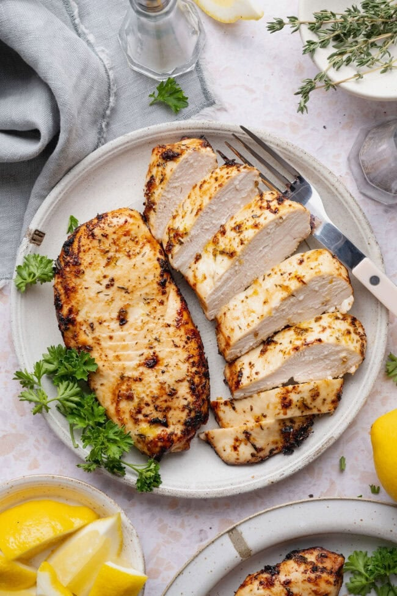

Chicken and Tatoes in the Fryer

An easy-to-make air fryer recipe for boneless chickens.
This will take about 15 minutes. Just make sure the chicken is fresh
and not frosted.
- 400g of chicken breast
- Sweet potatoes
- Salt & Pepper
- Olive Oil
- Take the skin off the sweet potatoes.
- Put them in the fryer.
- Add salt, pepper and olive oil.
- Put the chicken in the fryer as well.
- Add pepper and olive oil.
- Fry for 15 minutes. 180 degrees.
Return to Index